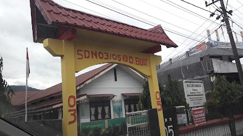
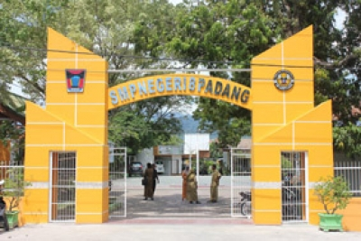
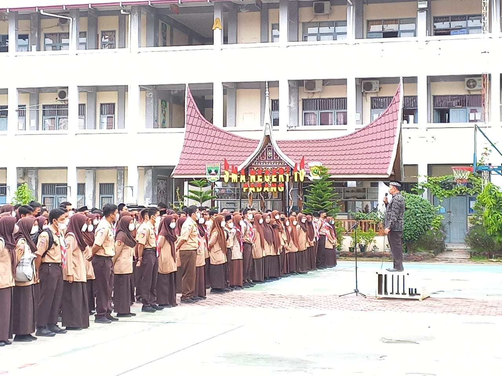

About
Saya memiliki pengetahuan dan pengalaman dalam menggunakan bahasa pemrograman seperti PHP, C++,
dan Python. Saya juga memiliki pengetahuan tentang database seperti MySQL dan SQLite.
Selain itu, saya juga memiliki keterampilan dalam menggunakan framework seperti Laravel. Saya memiliki
kemampuan dalam mengembangkan aplikasi web dan mengelola database. Saya juga memiliki pemahaman
yang baik tentang konsep pemrograman.
Education
SD N 03 Bandar Buat

Sekolah Dasar adalah fase awal dalam perjalanan pendidikan setiap individu. Ini adalah tempat di mana fondasi penting untuk belajar diletakkan. Di sekolah dasar, siswa diajarkan dasar-dasar literasi, matematika, dan ilmu pengetahuan. Mereka juga mengembangkan keterampilan sosial, kebiasaan belajar, dan rasa ingin tahu yang akan membantu mereka sepanjang hidup. Pengalaman bermain dan belajar di sekolah dasar membentuk fondasi penting dalam perkembangan anak-anak.
SMP N 8 Padang

Sekolah Menengah Pertama adalah tahap berikutnya dalam perjalanan pendidikan. Ini adalah masa transisi penting dari sekolah dasar menuju tingkat pendidikan yang lebih tinggi. Di sini, siswa mulai menggali lebih dalam dalam mata pelajaran yang lebih kompleks seperti matematika, ilmu pengetahuan, bahasa, dan sosial. Mereka juga mulai mengembangkan minat dan bakat mereka melalui beragam kegiatan ekstrakurikuler. Selain itu, siswa juga memahami konsep tanggung jawab dan kemandirian, persiapan penting untuk masa depan mereka.
SMA N 10 Padang

Sekolah Menengah Atas adalah babak terakhir dalam pendidikan tingkat dasar sebelum memasuki perguruan tinggi atau dunia kerja. Di tingkat ini, siswa diberikan lebih banyak otonomi dalam pemilihan mata pelajaran, yang membantu mereka mengejar minat khusus mereka dan merencanakan masa depan. Selain akademik, siswa juga terlibat dalam kegiatan ekstrakurikuler yang memperluas wawasan mereka dan membantu mereka mengembangkan kepemimpinan. Sekolah menengah atas adalah waktu di mana siswa mulai merancang jalur pendidikan dan karier mereka, dengan impian dan ambisi yang lebih jelas.
Hobby
1. Watching Anime

Anime adalah animasi asal Jepang yang digambar dengan tangan maupun menggunakan teknologi komputer. Kata anime merupakan singkatan dari animation dalam bahasa Inggris, yang merujuk pada semua jenis animasi
2. Playing Game

Permainan sesuatu yang digunakan untuk bermain, sebuah barang atau sesuatu yang pada umumnya digunakan untuk hiburan atau kesenangan, dan kadang-kadang digunakan sebagai alat pendidikan